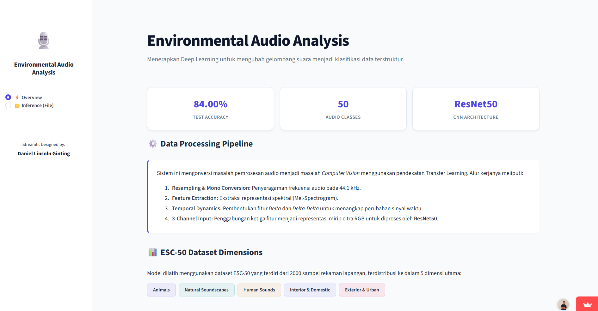
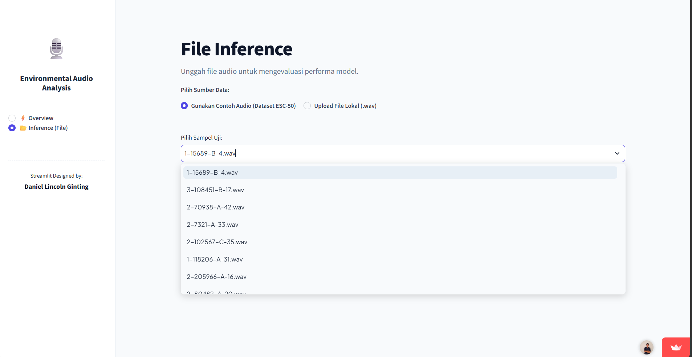
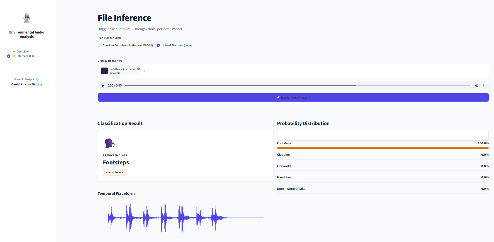

Environmental Sound Classification System
Key Tools
Project Overview
Problem
Environmental sounds such as sirens, rain, or dog barks carry valuable context for smart-city monitoring, security, and accessibility, but raw audio waveforms are difficult for machine learning models to interpret directly.
Objective
Build and deploy a deep learning model that accurately classifies 50 environmental sound categories by converting raw audio into visual representations a CNN can learn from.
Approach at a glance
- Data: the ESC-50 dataset, covering 50 environmental sound categories such as sirens, rain, and dog barks.
- Features: each audio clip is converted into a 3-channel image (Mel-Spectrogram, Delta, Delta-Delta).
- Model: a CNN built on the ResNet50 architecture learns to recognize the sound patterns.
- Result: 87% classification accuracy across the 50 categories.
- Deployment: the model runs in an interactive Streamlit web app where anyone can test it.
- Why it matters: turning audio into images lets proven image-recognition models handle sound, which opens the door to uses like smart-city monitoring and accessibility tools.
Methodology
Raw audio signals from the ESC-50 dataset were converted into 3-channel visual representations (Mel-Spectrogram, Delta, Delta-Delta), so an image-based CNN could learn both the frequency content of a sound and how it changes over time.
Result Summary of The Project
Rich Feature Representation
Transformed raw audio into 3-channel Mel-Spectrogram, Delta, and Delta-Delta images, capturing both frequency patterns and their temporal dynamics.
Strong Classification Performance
A CNN built on the ResNet50 architecture achieved 87% classification accuracy across 50 environmental sound categories.
Deployed as an Interactive App
The trained model was deployed as an interactive web application using Streamlit, so anyone can try audio classification in the browser.
App Demo
Click an image to enlarge it, or try the app yourself.


